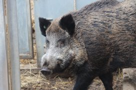

Is African Swine Fever a threat to Europe’s pig production? The knowledge can be found at Germany’s Friedrich-Loeffler-Institut. For scientists Dr Klaus Depner and Dr Sandra Blome, the virus has few secrets left. “Most problems are a matter of human misbehaviour.”
If there is one take-home message to report after having spoken to two of the leading scientists on African Swine Fever, it should be that the major threat with regard to the virus is not the virus itself, but how humans deal with it.
Dr Klaus Depner, head of the International Animal Health Team at the Friedrich-Loeffler-Institut (FLI) on the island Riems in northern Germany, has to admit that even he as expert needed some time to understand the disease.
He tells Pig Progress in an exclusive interview, “I have worked for about four years in Africa in the 1990s; that is where I first encountered the disease, albeit under African conditions. I really started actively observing it when it came to Georgia in 2007. My biggest mistake was that I copy-pasted all my knowledge about Classical Swine Fever (CSF) to African Swine Fever (ASF). But one has to forget about CSF when studying ASF. The mechanisms of the disease transmissions are not the same.”
Telling the difference is difficult
His colleague, head of the German national reference laboratory at the FLI, Dr Sandra Blome, comments. “In both cases the pigs get very sick and the losses are exactly the same. If I would have two infected pigs next to each other, I would not be able to tell the difference on the basis of clinical signs. I will only know which virus infected the pig once I have done the diagnosis in the lab.”
Same name, same clinical signs, but ASFv has a different way of behaving and spreading. Such is the lesson that the two learned having worked on ASF intensively since it appeared into Europe having been first introduced in Georgia and Armenia in 2007, after which it spread through Russia and Ukraine to get a presence in the Baltic States (Estonia, Latvia, Lithuania) and Poland as from 2014.
Two virus spreading models
Trials at the FLI showed that there is no difference in the way the ASF virus affects wild boars or domestic pigs. Logically, one of the major questions that the researchers had when ASF was introduced in 2007 in the Caucasus was: how would the virus spread and behave in wild boars?
Depner: “Essentially, we had two hypotheses. The first one was that the disease in wild boars would die out due to the high virulence of the virus.”
Blome: “Roughly, the animals get sick four days after infection.”
Depner: “Usually death will follow within three to six days. This means that almost all infected hosts will die very quickly, which means that the virus will cease to exist very soon because it kills its host. In that case, we would not have to worry, ASF would do its job extinguishing itself.”
Blome, however, points to the fact that ASF virus is not that contagious. High viral loads are found in blood, but saliva or faeces contain less virus: “We overestimated the contagiousness of African Swine Fever. The disease moves very slowly. When looking at affected wild boar populations, most of them have not been significantly reduced. The virus doesn’t spread that quickly at all.”
Model of how rabies spreads in foxes
The second model the researchers thought of was of how rabies spreads in foxes. Depner: “Rabies has been absolutely fatal in foxes, it kills all of them. And it has been spreading rapidly from east to west. We thought we might see this phenomenon, with a fast movement of disease. But no – ASF did not behave like rabies with foxes.”
Blome adds, “Wild boars shed the virus mainly when they are very sick and in the final stage of the disease. When the animals have high fever it’s in their character to stay where they are, and they are certainly not going to walk very far when they feel bad.”
Depner: “So what we have here is a virus that is very stable in its environment without fast movement. It neither dies out, nor moves. Undisposed carcasses of infected wild boars remain infectious for a long time in the environment and become a source of infection for healthy animals.”

Researchers Dr Sandra Blome (left) and Dr Klaus Depner are both involved in monitoring and research programmes that provide a better insight into ASF in Europe. Photo: Vincent ter Beek
The human role
Still, ASF did spread from the Caucasus until the Baltics and Poland. The question now is how. Soft ticks and insects are unlikely to have transmitted the virus, the scientists say. In fact, they have little doubt identifying about the real reason behind most of the ASF outbreaks: negligence.
Participating in recent ASF monitoring missions in Eastern Europe, Depner has a good idea of what has likely occurred. He says, “Often it was a matter of human misbehaviour. What happened is that infected meat made it to the market. When many pigs started to die, they were sent to slaughter. Pig prices dropped, cheap meat entered the market and the meat made its way into homes – and into suitcases. This is how the virus dispersed. The virus spread along the main roads, the transport routes. This spread bears a 100% human mark.”
ASF despite tight biosecurity
Blome adds: “We’ve seen examples of farms that said to apply tight biosecurity and still got infected with ASF. After careful examination it turned out that the biosecurity measures were by far not so efficient as declared.”
Humans can be identified as having aggravated the situation ever since as well. Since wild boars have often been thought to be spreading the virus, in several countries attempts were launched to eradicate them – with the result that sounders were chased across borders, the researchers say.
In addition, the occurrence of ASF in the Baltic states Latvia, Lithuania and Estonia, bear a significant human characteristic. The virus can maintain itself in the country’s wild boar population as without humans wild boar cannot survive so far north. Depner explains. “The density of wild boars was established artificially in the Baltic states by humans, for hunting purposes. For survival, the wild boars are completely dependent on humans, as temperatures in winter can reach as low as -20°C for weeks. So feeding does take place to keep the animals alive.”
Any reason to worry?
Germany also has a flourishing – naturally occurring – wild boar population, so in theory it would be a great country for ASF to spread in the wild boar population. Despite 600,000 heads having been hunted last year, the numbers only appear to grow. Still, ASF shouldn’t worry pig producers in Europe, as long as proper biosecurity is taken into account. Changing clothes, working hygienically and making sure nothing from the outside reaches the inside. With limited backyard farming and no swill feeding allowed in the EU, the pig industry would have to be safe from ASF. In order to further reinforce this message, on parking places at the major inbound motorways in Germany, posters have been hung up in four languages to warn truck drivers not to throw garbage out into the environment.
Depner strongly rejects the suggestion, as if the European authorities would not be taking the disease seriously enough. He says, “We do not underestimate ASF, on the contrary, we do a lot of work! What we can also see is that every outbreak of the disease is reported – even stronger, in the Baltics and Poland, most of the outbreaks in domestic pigs were reported by farmers, proving that passive surveillance works very well. That goes to show that all the services are well-prepared, and that veterinarians and farmers are doing excellent work to contain the virus.”

Warthogs and wild boars at FLI
The Friedrich-Loeffler-Institut is the German federal research institute for animal health with a major advisory function for the country's ministry of agriculture. With five locations spread out over Germany, the main building in the island Riems focuses on viruses in all kinds of production animals. The facility has trial sites in very many different levels of biosecurity and is certified to do all kinds of trials to learn more. Diseases which are studied in pigs include Foot-and-Mouth Disease, Porcine Epidemic Diarrhoea, Classical Swine Fever and African Swine Fever. Apart from pigs, the institute uniquely also has wild boars and warthogs on-site especially to learn more about the effects of ASF. Warthogs are difficult to keep in captivity and are even likely to attack. Wild boars in captivity – although genetically largely the same as pigs – are very calm and gentle, but are still capable of attacking people.
Biographies
Dr Sandra Blome is a veterinarian by profession. She studied at Leipzig University, Germany and specialised in animal disease control. From 2004-2008 she worked as a senior scientist at EU and OIE Reference Lab for CSF at the University of Veterinary Medicine, Hanover, Germany. Blome joined the Friedrich-Loeffler-Institut (FLI) in 2008. She is now head of the German national reference laboratory for CSF and ASF.
Dr Klaus Depner graduated in veterinary science at the School of Veterinary Medicine, Hanover, Germany in 1988, after which he completed his doctoral thesis in virology. He spent four years in Namibia as head of the virology lab at the CVL in Windhoek. He also worked for the FAO in Rome, Italy and the DG-Sanco in Brussels, Belgium. Since 2010 he has headed the International Animal Health Team within the FLI’s Institute of Epidemiology.